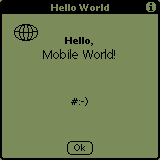

 Objective Objective
To write, compile and test your first Palm application.
 Concepts Concepts
Structure of a palm application
First, you need to include your definition
file(s) for the app and the system
file(s) related to the APIs and data structures you use from
the SDK.
#include "hello.h"
#include <System/SystemPublic.h>
#include <UI/UIPublic.h>
The equivalent to C's main() is PilotMain: UInt32
PilotMain(UInt16 cmd, MemPtr cmdPBP, UInt16 launchFlags).
The arguments are somewhat equivalent to C's argc and argv. They
specify which event fired the app. In hello, we will only
deal with the most basic LaunchMode:
sysAppLaunchCmdNormalLaunch. Other modes
are presented further in this tutorial.
We will open our main form with FrmGotoForm(Form1)
and enter an "infinite" loop that will manage system,
menu, form and user events. This loop will actually terminate
when the user leaves the app or if there's any critical error. Here's
the body of this loop:
EvtGetEvent(&e, 100);
if (SysHandleEvent(&e))
continue;
if (MenuHandleEvent((void *)0, &e, &err))
continue;
switch (e.eType)
{
case ctlSelectEvent:...
case frmLoadEvent:...
case appStopEvent:...
case frmOpenEvent:...
case menuEvent:...
default:
}
When the user quits the app, we do an FrmCloseAllForms()
and return 0.
Resources
A well-written app should not include any UI element inside its
source code. Those guys must be stored elsewhere: in a resource
file. PilRC uses .rcp as an extension in the filename. Once
you have a clear idea of how your UI is going to look like, just
fire your favorite text editor, describe your resources (menus,
forms, buttons, images...), save the file as a .rcp and compile
it with PilRC. Once you understand how to create a resource file,
you may want to use a more visual way of doing it, such as PilRCEdit.
Compiling
The makefile is included. Here's what
it does for you:
- compile the .c into a .o with gcc
- compile the .rcp into a collection of .bin with pilrc
- combines the .o and .bin into a .prc with build-prc
Testing
You may double-click on hello.prc that you just compiled, and then
run HotSync, which will load "Hello" on your device. This
is the easiest way, but also not the quickest. When you develop
an app, you have to test it over and over again. HotSync takes sometime
to run, which will significantly slow down the development process.
The other way of testing an app is to load it on the Palm
OS Emulator (aka POSE). This tool emulates both the processor
and ROM of a device. You must download POSE as well as the ROMs
of the devices you need to emulate.
Once you have POSE running, just drag and drop hello.prc and click
on the Hello icon in the emulator.
Please note that all the applications of this tutorial will be
stored in a specific category in the
PalmOS Launcher. Just like you have 'Main', 'System', 'Utilities',
'Unfiled'... You'll have a brand new category named... Guess what?...
'Tutorial' #:-}
 Exercise Exercise
Download the ZIP file.
As it's your first Palm app, your task will be easy.
In the resource file, you need to add:
- the title of the form
- a label with the smiley
- an ICON clause that tells PilRC which bitmap is used as an icon
in the Palm launcher
In the C file, you should:
- include the .h file
- declare an EventType variable named "e"
- add a call to FrmGotoForm(Form1)
- add a call to EvtGetEvent(&e, 100)
- add a call to FrmSetActiveForm(FrmInitForm(e.data.frmLoad.formID))
- add a call to FrmGetActiveForm() and store the result into pfrm
- add a call to FrmDrawForm() passing pfrm as an argument
- clean up when the user quits the app, by calling FrmCloseAllForms()
Lastly, in the makefile, replace all occurences of MY_APP with
hello.prc.
 Solution Solution
Here's the ZIP file.
And here's how the app should like:
Next topic 
|